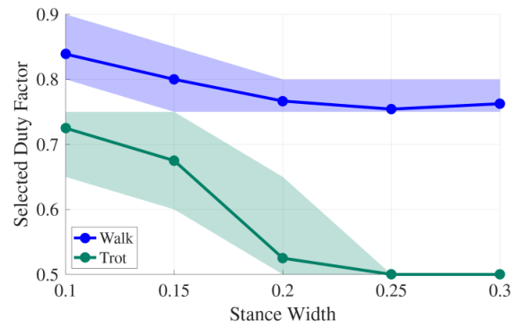

Quad-SDK
900+ GitHub stars · 170+ forks
I developed a C++ runtime for deploying learned locomotion policies in Quad-SDK and contributed ROS 2 integration for Unitree quadrupeds. The runtime plugs learned controllers into the stack’s shared simulation and hardware interfaces, enabling matched-command comparisons with Unitree’s stock controller.
Watch on YouTube

Learned Locomotion Through Underbrush
Dense vegetation can obscure the ground and entangle a robot’s legs. Our locomotion policy uses joint motion and estimated torques to infer which leg is caught and learn how to free it. I led the Unitree Go2 hardware evaluation in controlled bungee entanglements and natural underbrush, comparing contact estimates decoded from each leg’s recurrent state against video of catches and releases.

Balancing on a narrow beam
I designed a duty-factor selector that maps beam width and motion commands to stance duration. Across 45 Unitree Go2 trials on a 15 cm beam, we evaluated how stance duration affected crossing success under centroidal model predictive control without dedicated balance actuation.
Photo or video forthcoming
5-DOF Palletizing Robot
I built a custom five-axis arm and integrated a suction end effector with a ROS 2 software stack. The system uses OpenCV-based perception and coordinated arm motion to pick and stack cartons.
Photo or video forthcoming
Omnidirectional Palletizing Platform
I prototyped an omnidirectional mobile base for palletizing, integrating LiDAR, cameras, and an IMU for mobile operation. I also evaluated vacuum hardware for lifting and stacking cartons.
Photo or video forthcoming
Urban Search and Rescue Robot
I built a teleoperated mobile manipulator for search and rescue in rubble. I implemented inverse kinematics for arm control and a vision pipeline using image segmentation and flood fill to detect objects.